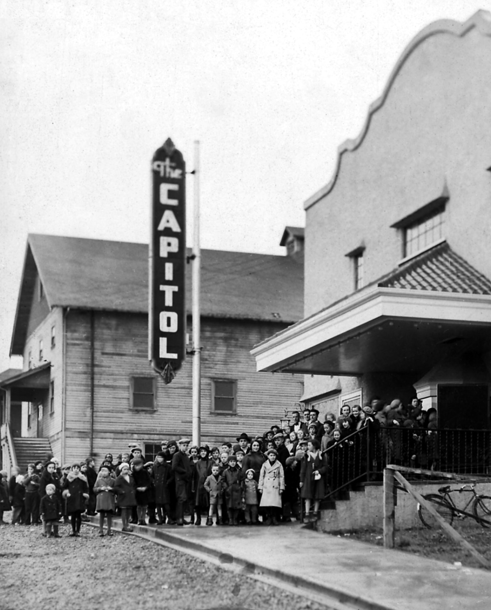
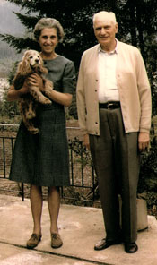

Helen Ford’s generosity included a bequest to enhance the local theatre community with a performing arts space. Ultimately, this bequest was used to completely renovate The Capitol Theatre – and especially the front of house, lobby, concession area, costume room, public washrooms, members lounge & furnishings, and tech room. It is in her honour that we have named our front of house the Helen Ford Lobby.
Bequest funds also helped to leverage additional grants from Cultural Spaces Canada, The Province of BC, and the Vancouver Foundation to aid in this renovation work. Individual donations have also contributed to the completion work of The Capitol Theatre. Additional renovations included a makeover of the green room, installation of a new roof, enhancement of the lighting and sound systems, creation of a proper office space & equipment, a total refit of the stage curtains & hardware, implementation of an electronic box office with reserved seating, and the wondrous front exterior which features a new entrance canopy and marquee sign.
Portal Players Dramatic Society sincerely thanks Helen Ford and the estate for their generosity in allowing this work to take place. The Capitol Theatre is now, truly, “Home of the Performing Arts” in Port Alberni.
About Helen Ford
Helen Ford first saw the Alberni Valley in 1926 when her father purchased the Sproat Lake Logging Co. and renamed it Sproat Lake Sawmills. She loved the lake and determined to spend as much time as possible there. This was easy because her parents were living at Kleecoot. She built herself a small cabin across Stirling Arm and gradually fitted into the community. World War II found her enlisted in the Canadian Women’s Army Corp as an officer. In 1946 she was awarded an M.B.E. for her Service.
Following her marriage to Armour Ford in 1953 they came to Sproat Lake to take up permanent residence. Armour was called to the bar in British Columbia and practiced law locally until his retirement. However, it was as a community-minded couple that the Fords made a very special contribution to their adopted home. Helen was active in the Women’s Auxiliary to the West Coast General Hospital, a founding member of the Community Arts Council, an elected member of the Board for School District #70, and a member of the Mt. Klitsa Garden Club. Armour’s name appears as a supporter of the Naval Cadets and for many years was the treasurer of the Alberni District Historical Society.
Prior to 1965, Helen, Ketha Adams, and a few other like-minded citizens had serious concerns for the documentation of the History of the Alberni Valley. They began collecting artifacts and archival material, and persuaded the Mayors of the twin citys, Les Hammer and Fred Bishop to support their cause. The A.D.H.S. came into being in 1965. What was needed next was a museum to hold the growing collection. That became a reality in 1972, to be followed in 1983 by an expansion. This expansion allowed the Archival Collection to be moved from a totally inadequate workshop in the old Army Camp Fire Hall to a safe venue in the new space.
Helen’s interest in the indigenous community was genuine and out of it grew many personal friendships. Her support of cultural events and local organizations was on going and frequently very low key. In 1983 Helen and Armour Ford were named “Citizens of the Year”, a well-deserved acknowledgement of their presence among us.
From the little cabin Helen built to use on her frequent visits to Sproat Lake, to the larger home she and Armour built on the same property across from their residence on Stirling Arm Drive, Helen made good her promise to herself “live at the Lake”. In due course, this 130 acres of land, complete with a waterfall, was given to the people of British Columbia as a day-use Park. Fossli, a waterfall in a meadow, now became a small paradise for those who hike into it or arrive by boat.
Helen’s health began to fail following the death of Armour, and she herself passed away in May of 1997 at age 91. But her kindness was not yet over. In her will, she bequeathed to the A.D.H.S. a sum of money, documents, books, and artifacts which have spread out to continue to bless us all. Helen Lake up on Porter Ridge is named in her memory.
Thank you Helen.
Courtesy Alberni District Historical Society